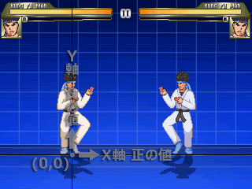
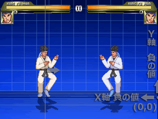
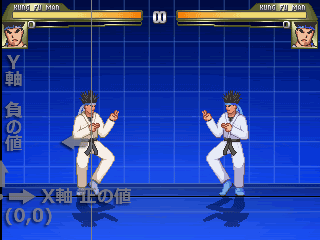
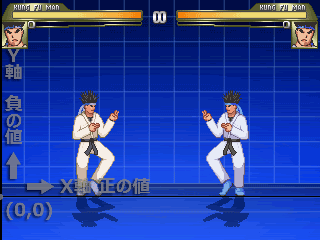
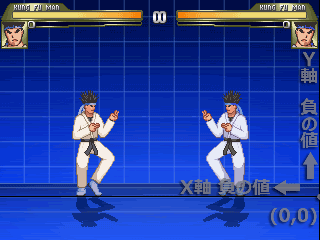
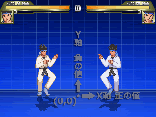

飛び道具を出現させます。独自のパラメータ以外にHitDefの全てのパラメータを設定可能。
ちなみに、飛び道具でもやられ判定を付けないと相殺しません。
割と細かい設定が可能ですが、それでもあまり複雑な動きはできません。
このステートコントローラーで役不足な場合はHelperを使用します。
なお、WinではプレイヤーへのPalFXの影響を受けてしまいます(バグ？)。OwnPal=1を指定してもエラーとはなりませんが、無効です。
ちなみに、Helperが出したProjectileも、本体管理となります。当然、パレットも本体と共用です。
パラメーター
- Attr = 反撃属性1, 反撃属性2, ... (文字列, 文字列, )
-
攻撃の属性を指定します。
属性1には、「S」「C」「A」(順に立ち、屈み、空中)のいずれかを指定します。
属性2には、「N」「S」「H」「A」（順に通常、必殺、超必殺、すべて）と、「A」「T」「P」（同じく攻撃、投げ、飛び道具）を組み合わせて指定します。
例えば立ちパンチなどならAttr = S,NA、空中で飛び道具を出す超必殺技ならAttr = A,HP と記述します。
空中判定になる地上攻撃(リープアタック等)は、空中扱いにしましょう。ただし、AirやOffsetで見た目のみ浮いている場合は、地上扱いでもかまいません。とりあえず、StateTypeと同じにしておけば、問題ないでしょう。
省略時のデフォルト値： ;なし(攻撃がヒットしない)
- HitFlag = ヒットフラグ (文字列)
-
敵がどういう状態ならヒットするかフラグを指定します。フラグは複数指定可能。
投げ技など連続技に組み込めない攻撃で有効。
フラグ H 立ち L 屈み M 立ち、屈みの両方 A 空中 F 落下状態 D ダウン状態(ただし、Fと組み合わせなければ機能しない) P 飛び道具を消せるようになる。ただし、Windows版のみ。 + 食らい状態の敵のみにヒット - 食らい状態の敵にはヒットしない 省略時のデフォルト値： MAF ;ダウン状態にのみヒットしない
- GuardFlag = ガードフラグ (文字列)
-
敵がどういう状態ならガードできるかフラグを指定します。フラグは複数指定可能。
フラグ H 立ち L 屈み M 立ち、屈みの両方 A 空中 省略時のデフォルト値： MA ;どのような状態でもガード可
- AffectTeam = 影響チーム (文字列)
-
チームモード時、どのチームに攻撃が影響するかフラグを指定します。
フラグ B 敵味方かまわず E 敵のみ F 味方のみ 省略時のデフォルト値： E
- AnimType = アニメタイプ (文字列)
-
相手のリアクションアニメの種類を指定します。
ただし、「up」と「diagup」はオプションで、相手が絵を用意してない場合は、「back」と同じ結果になります。
文字列 状態 L 弱 (Lightの略) M 中 (Mediumの略) H 強 (Hardの略) B ふっとび (Backの略) U 真上ふっとび (UPの略) D 斜めふっとび (DiagUpの略) 省略時のデフォルト値： Light
- Air.AnimType = 空中でのアニメタイプ (文字列)
-
空中でのアニメタイプを指定。
省略時のデフォルト値： ;AnimTypeと同じ値になります。
- Fall.AnimType = fall状態時のアニメタイプ (文字列)
-
空中でのアニメタイプfall状態のときのアニメタイプです。
※fall状態・・・fall=1。hittimeを過ぎても、受身を取らない限り空中復帰できず、着地すると落下ダウンする状態。これに対し、fall=0の場合、空中で立ち直り、hittimeを過ぎると操作可能となる。また、hittime中でも、着地すると通常のジャンプ着地となる。なお、一度fall=1になると、fall=0の攻撃を受けてもfall=1のままとなる。
省略時のデフォルト値： ;Air.AnimTypeがUの時はU、それ以外ならBになります。
- Ground.Type = 地上でののけぞり方 (文字列)
-
相手の地上でののけぞり方を文字列で指定します。
文字列 状態 H 上のけぞり (Highの略) L 下のけぞり (Lowの略) T 転倒 (Tripの略) N なし、使用は非推奨 (Nonの略) 省略時のデフォルト値： High
- Air.Type = 空中でののけぞり方 (文字列)
-
相手の空中でののけぞり方を文字列で指定します。設定方法はground.typeと同じ。
省略時のデフォルト値： ;Ground.Typeと同じ値になります。
- ProjID = 飛び道具のID番号 (整数)
-
IDを指定。Projectile発生条件などに使用。正の整数のみ指定可。
- ProjRemove = 消滅フラグ (整数)
-
0以外を指定すると、ヒット時に消えるようになります。
省略時のデフォルト値： 1
- ProjRemoveTime = 射程時間 (整数)
-
画面に出現してから、消滅するまでの時間を指定。-1で消えなくなります。
省略時のデフォルト値： -1
- ProjShadow = 赤影, 緑影, 青影 (整数, 整数, 整数)
-
影の色を指定。-1でステージ依存、0,0,0で影なし、255,255,255でまっくろになります。
省略時のデフォルト値： 0, 0, 0
- ProjMissTime = ミス時間 (整数)
-
複数ヒットする場合、何フレームごとにヒットするかを指定。省略時0。一瞬で全部当たります。
省略しない方がよいとされていますが、misstime中もprojectileは移動するため、ヒット数が多い場合、途中で敵をすり抜けてしまうことがあります。
全段ヒットする飛び道具の場合は、pausetimeの方で調節するのが吉。
- ProjHits = ヒット数 (整数)
-
ヒット数を指定。
省略時のデフォルト値： 1
- ProjPriority = 飛び道具優先度 (整数)
-
飛び道具の優先度を指定。ヒット数に関係なく、高い方が低い方をかき消します。ただし、かき消した場合、優先度が1下がります。省略時1。
例えば、3ヒットするprojpriority = 3の飛び道具は、飛び道具を2つかき消した後でヒットしても、3ヒットします。
- ProjHitAnim = ヒット時のアニメ番号 (整数)
-
飛び道具が当たったときのアニメを指定。-1にするとアニメは変更されません。
省略時のデフォルト値： -1
- ProjRemAnim = 消滅時のアニメ番号 (整数)
-
時間経過や、画面外に出たりして消えるときのアニメを指定。省略すると、ヒット時のアニメが使われます。
- ProjCancelAnim = 相殺時のアニメ番号 (整数)
-
敵の飛び道具等にかき消されたときのアニメを指定。省略すると、消えるときのアニメが使われます。
- Velocity = 水平速度, 垂直速度 (浮動小数点数, 浮動小数点数)
-
初速度を指定。
省略時のデフォルト値： 0, 0
- VelMul = 水平速度係数, 垂直速度係数 (浮動小数点数, 浮動小数点数)
-
加速度を倍数で指定。
省略時のデフォルト値： 1, 1
- RemVelocity = 消滅時水平速度, 消滅時垂直速度 (浮動小数点数, 浮動小数点数)
-
消滅時の速度を指定。
省略時のデフォルト値： 0, 0
- Accel = 水平加速度, 垂直加速度 (浮動小数点数, 浮動小数点数)
-
加速度を指定。
省略時のデフォルト値： 0, 0
- ProjScale = x縮尺, y縮尺 (浮動小数点数, 浮動小数点数)
-
縮尺を指定。cnsファイルの[Size]群にある"proj.doscale"パラメータが1の場合、同群の"scale"パラメータの影響も受けます。
省略時1,1(変更なし。ただし、proj.doscale=1の場合、プレイヤーのscaleの影響は受ける)。
- ID = ヒットid番号 (整数)
-
識別用のIDをつけることができます。後述と組み合わせることにより、特定の技からは繋がらなかったりするようにできます。
また、Target系のステコン、トリガーが参照するID(HitID)は、このIDの攻撃によりターゲットとなった敵を示します。省略時0。
- ChainID = 連続ヒットid番号 (整数)
-
ここで指定したIDからのみ、攻撃が繋がるようになります。省略時-1(すべての攻撃が繋がります)。
- NoChainID = 不連続ヒットid番号1, 不連続ヒットid番号2 (整数, 整数)
-
ここで指定したIDからは攻撃が繋がらなくなります。2つまで指定可。ガード時も繋がらなくなる(攻撃がすり抜ける)ので、使いにくい。。。省略時-1(すべての攻撃が繋がります)。
- Kill = KOフラグ (整数)
-
0にすると、その攻撃で相手をKOできなくなります。
最後の一撃でのみKOしたい多段攻撃などに。
省略時のデフォルト値： 1
- Guard.Kill = ガードKOフラグ (整数)
-
0にすると、ガード時のダメージで相手をKOできなくなります。
省略時のデフォルト値： 1
- Fall.Kill = (整数)
-
0にすると、落下ダウン時のダメージで相手をKOできなくなります。
省略時のデフォルト値： 1
- HitOnce = 1回ヒットフラグ (0か1)
-
省略時0。1にした場合、複数の敵がいても、1方にしかヒットしなくなります。AttrがT(投げ)の場合、1になります。
- Air.Juggle = ジャグルポイント (整数)
-
Fall状態の敵に対する連続技に必要なポイント数を上乗せ。StateDefのJuggleパラメータとは違う値です。
Projectile専用パラメータ。
省略時のデフォルト値： 0
- Damage = ヒットダメージ, ガードダメージ (整数, 整数)
-
ヒット、ガード時のダメージを整数で指定します。省略すると0です。
- GetPower = p1ヒットゲージ増加量, p1ガードゲージ増加量 (整数, 整数)
-
攻撃がヒットした、ガードされたときに増えるゲージ量です。
省略時は、ヒット時がmugen.cfgのDefault.Attack.LifeToPowerMulパラメータにdamageをかけたものに、ガード時がその半分になります。
- GivePower = p2ヒットゲージ増加量, p2ガードゲージ増加量 (整数, 整数)
-
攻撃がヒットした、ガードされたときに増える相手のゲージ量です。
省略時は、ヒット時がmugen.cfgのDefault.GetHit.LifeToPowerMulパラメータにdamageをかけたものに、ガード時がその半分になります。
- PauseTime = p1停止時間, p2ブルブル時間 (整数, 整数)
-
ヒット時の自分と相手の停止時間を整数で指定します。停止時間中、相手はブルブル揺れます(HitShake状態)。省略時0,0。
- NumHits = ヒットカウント数 (整数)
-
コンボカウンターに加算されるヒット数です。
省略時のデフォルト値： 1
- HitSound = グループ番号, アイテム番号 (整数, 整数)
-
ヒット音をcommon.sndから指定します。5,0(弱ヒット音)～5,4(大打撃音)から選ぶことになります。自分のsndファイルから指定したい場合は、"hitsound = S1,0"のように、先頭にSを記述します。
- GuardSound = グループ番号, アイテム番号 (整数, 整数)
-
ガード音をcommon.sndから指定します。といっても、用意されているのは6,0のみ。自分のsndファイルから指定したい場合は、先頭にSを記述します。
- Priority = ヒット優先度, 相打ちの挙動 (整数, 文字列)
-
攻撃の優先度で1から7、相打ち時の挙動を「Hit」「Dodge」「Miss」の内から指定します。
実行者の攻撃と相手の攻撃が同時に発生した場合、数値の高い方のみヒットします。ヒット優先度が同じ場合、「Hit」「Miss」「Dodge」により以下のようになります。
文字列 状態 H 攻撃がヒットする (Hitの略) M 自分の攻撃は当たらない (Missの略) D 相手が「Hit」でも両者空振り (Dodgeの略) 省略時のデフォルト値： 4, H
- P1StateNo = ヒット時移行するステート番号 (整数)
-
攻撃がヒットした場合に移行するステートの番号を指定します。主に投げ技で使用。
省略時のデフォルト値： -1
- P2StateNo = ヒット時相手に参照させるステート番号 (整数)
-
攻撃がヒットした場合に、相手に参照させるステートの番号を指定します。これを指定した場合、HitOverrideを仕込んだ相手(Helper等)に攻撃が当たらなくなります。
P2StateNo=-1とすると、P2GetP1State=1の効果のみになる。（P2GetP1State=0が指定されている場合はP2GetP1Stateが優先されるためP2GetP1State=0となる。）なお、この際に5000番台に移動するのはGround.Type、Air.TypeがNormal(頭文字がN）以外の場合である。
投げに使ってもProjectile等と相打ちした時に致命的な不具合が生じることがあるので、できれば全く使わない方が良いです。
といいたいところですが、代わりに使うことになるTargetStateも扱いが難しいので、不具合を承知で使うのも止むを得ないかもしれません。
省略時のデフォルト値： -1 ;無効
- P2GetP1State = ステート奪取フラグ (整数)
-
0の時はP2StateNoを指定していても対象者のステートを奪わず、対象者自身のステートを読みこませる。1の時は相手のステートを奪います。
省略時のデフォルト値： ;相手に実行者の食らいステートを読み込ませる。
- P1SprPriority = (整数)
-
攻撃が接触した場合のスプライトの表示優先度を指定します。1だと相手の手前、-1だと奥に表示されます。省略時1。
- ; SprPriority = スプライト表示優先度 (整数)
-
- P2SprPriority = (整数)
-
- ForceStand = 強制立たせフラグ (整数)
-
1にすると、しゃがんだ相手にヒットしても立ち食らいポーズをとらせます。
省略時のデフォルト値： ;Ground.VelocityのY速度が0なら0、0でなければ1になります。
- ForceNoFall = (整数)
-
- Fall = 落下フラグ (整数)
-
通常、相手を浮かせるような攻撃でも、hittimeが終了すれば、相手は立ち直り、着地しますが、fall = 1にした場合、相手は自動では立ち直らず、受身操作（x+y）をしなければダウンします
- Fall.Damage = damage_amt (整数)
-
落下状態のままダウンした場合に与えるダメージを指定します。
省略時のデフォルト値： 0
- Fall.XVelocity = 落下バウンド水平速度 (浮動小数点数)
-
落下状態のままダウンした場合の、バウンド水平速度を変更する場合、指定します。
省略時のデフォルト値： ;速度は変更されません。
- Fall.YVelocity = 落下バウンド垂直速度 (浮動小数点数)
-
落下状態のままダウンした場合の、バウンド垂直速度を指定します。
省略時のデフォルト値： -4.5
- Fall.Recover = 受身可能フラグ (整数)
-
0にすると相手が落下状態でも受身（x+y）をとれなくなります。省略時1(受身可能)。
- Fall.RecoverTime = 受身可能受付開始時間 (整数)
-
落下状態になってから受身が取れるようになるまでの時間を指定します。PauseTimeは含まれません。Fall.Recover = 0にした場合は無効。
追撃することを想定している場合は、大きな値を設定するか、Fall.Recover = 0にします。
省略時のデフォルト値： 4
- SparkNo = ヒットスパークのアクション番号 (整数)
-
ヒットスパークのアクション番号をfightfx.airから指定します。自分のairファイルから指定したい場合は、"sparkno = S2000,0"のように、先頭にSを記述します。省略時は、cnsで設定した値が使用されます。
- Guard.SparkNo = ガードスパークのアクション番号 (整数)
-
ガードスパークのアクション番号をfightfx.airから指定します。自分のairファイルから指定したい場合は、"guard.sparkno = S2010,0"のように、先頭にSを記述します。省略時は、cnsで設定した値が使用されます。
- SparkXY = スパークx座標, スパークy座標 (整数, 整数)
-
ヒット、ガードスパークの表示位置を指定します。省略時0,0。
- P1Facing = p1の向き (整数)
-
-1にすると、攻撃がヒットした場合に後ろを向きます。主に投げ技で使用。省略時は向きを変えません。
- P1GetP2Facing = p1の向き (整数)
-
1にすると、攻撃がヒットした場合に相手と同じ方向を、-1で逆を向きます。省略時0(向きを変えない)。p1facingより優先されます。
- Snap = x固定座標, y固定座標 (整数, 整数)
-
ヒットした相手を固定する位置を、P1を基準として指定します。
このパラメータも、通常、使用しません。投げ等で相手を指定位置に固定する場合は、TargetBindを使用します。
- ; MinDist = x最小座標, y最小座標 (整数, 整数)
-
攻撃がヒットしている間の、P2の移動範囲をP1の位置を基準として指定できますが、このパラメータは一般に使用されません。とありますが、カンフーマンで使われてたり。。。。
- ; MaxDist = x最大座標, y最大座標 (整数, 整数)
-
攻撃がヒットしている間の、P2の移動範囲をP1の位置を基準として指定できますが、このパラメータは一般に使用されません。とありますが、カンフーマンで使われてたり。。。。
- P2Facing = p2の向き (整数)
-
1にすると、攻撃がヒットした場合、相手に正面を向かせます。-1にすると後ろを向かせます。
省略時のデフォルト値： ;向きは変わりません。
- Ground.HitTime = ヒット時間 (整数)
-
相手が攻撃を受けて行動不能になる時間です。長くするほど連続攻撃が繋がりやすくなります。永久コンボが発生しないように、気をつけて設定しましょう。
相手が地上にいる間のみ有効です。省略時0。
- Ground.SlideTime = ヒットバック時間 (整数)
-
相手が攻撃を受けて後ずさる時間です。この時間が経過すると、ブレーキがかかります。ただし、やられステートのphysicsがSやCになっているため、ヒットバックは摩擦によっても停止します。よって、よろけやられのような、ゆっくりとしたヒットバックは、HitDefでは再現できません。ナニソレ。
省略時0。殆ど意味のないパラメータですが、省略すると、強烈なブレーキがかかってしまうので、省略もできません。
- Ground.Velocity = ヒット速度X, ヒット速度Y (浮動小数点数, 浮動小数点数)
-
相手が地上で攻撃を受けて移動する速度です。yに負数を指定すると、宙に浮きます。
省略時0,0。地上にいる場合、摩擦の影響を受けます。
- Ground.CornerPush.VelOff = 地上コーナープッシュ速度 (浮動小数点数)
-
画面端で地上の相手に攻撃を加えたときに、押し戻される速度を指定します。値が大きくなるほど、画面端から遠くに押し戻されます。
相手の移動距離とは無関係で、相手のshaketimeではなく、自分のpausetimeが0になった瞬間に速度がかかります。
省略時のデフォルト値： ;AttrがAの場合は0、それ以外の場合は、1.3*Guard.Velocityとなります。
- Air.HitTime = 空中でのヒット時間 (整数)
-
相手が空中で攻撃を受けて行動不能になる時間です。この時間を過ぎると、相手はコントロールを取り戻します。ちなみに、このときのグラフィックはairにのみ依存するため、見た目が立ち直っていても、時間内なら行動不能(5035番のアニメが短いとき起きる現象)ですし、時間が経過していれば、見た目がのけぞり中でも行動可能(5035番のアニメが長いとき起きる現象)です。省略時は20。つまり、この値に合わせてair(5035番)を設定する必要があります。fallパラメータが1の場合、このパラメータは無効になります。
- Air.Fall = value (整数)
-
空中ヒットしたときのみ落下状態にしたい場合は1にします。fall = 1だと地上やられでも落下状態になります。省略時はfallと同値。
- Air.Velocity = 空中ヒット速度X, 空中ヒット速度Y (浮動小数点数, 浮動小数点数)
-
相手が空中で攻撃を受けたとき移動する速度です。
省略時のデフォルト値： 0, 0
- Air.CornerPush.VelOff = 空中コーナープッシュ速度 (浮動小数点数)
-
画面端で空中の相手に攻撃を加えたときに、押し戻される速度を指定します。値が大きくなるほど、画面端から遠くに押し戻されます。
省略時のデフォルト値： ;Ground.CornerPush.VelOffと同じ値になります。
- Down.Bounce = ダウン追い討ちヒットバウンドフラグ (整数)
-
1にすると、ダウン追い討ちヒット時、fall.xvelocityとfall.yvelocityでバウンドします。down.velocityの垂直速度が0の時のみ有効。
省略時0(バウンドしない)。
- Down.HitTime = ダウン追い討ちヒット時間 (整数)
-
ダウン状態の敵に攻撃が当たったとき、スライドする時間です。down.velocityの垂直速度が0の時のみ有効。
- Down.Velocity = ダウン追い討ち水平速度, ダウン追い討ち垂直速度 (浮動小数点数, 浮動小数点数)
-
ダウン追い討ちヒット時ののけぞり速度を指定します。垂直方向の速度が0以外の場合、相手は宙に浮きます。0の場合はスライドします。省略時は、air.velocityと同値。
- Down.CornerPush.VelOff = ダウンコーナープッシュ速度 (浮動小数点数)
-
画面端でダウン状態の相手に攻撃を加えたときに、押し戻される速度を指定します。値が大きくなるほど、画面端から遠くに押し戻されます。
省略時は、ground.cornerpush.veloffと同値になります。
- Guard.Velocity = ガード速度X (浮動小数点数)
-
相手が地上で攻撃をガードしたとき移動する速度です。垂直方向は指定不可。
省略時のデフォルト値： ;Ground.Velocityと同じ値になります
- Guard.HitTime = ガード時間 (整数)
-
相手が攻撃をガードしてから自動的に(キーを後ろに入力しなくても)ガードモーションをとり続ける時間。行動不能時間ではないので注意。
DOS版では、なぜか、実際にゲームに反映されるのは、指定値の半分になります。省略するとground.hittimeと同値になりますが、前述の仕様により、実際のガード時間はground.hittimeの半分となり、硬直は、guard.ctrltime(省略時guard.slidetime)か「ground.hittimeの半分」のどちらか低い方、ということにになります。
「ガードされると凄く不利」というのがDOSの仕様です。DOSでの使用を想定している場合は、ちゃんと設定したほうがよいでしょう。 WIN版では、指定値がそのまま適応されます。
省略時のデフォルト値： ;Guard.SlideTime
- Guard.SlideTime = ガードバック時間 (整数)
-
Ground.SlideTimeのガード版。
省略時のデフォルト値： ;Guard.HitTimeと同じ値になります。
- Guard.CtrlTime = ガードからの復帰時間 (整数)
-
相手が攻撃をガードしてからコントロールを取り戻すまでの時間。ただし、どんなに大きな値にしてもguard.hittimeが過ぎれば相手はコントロールを取り戻します。
省略時のデフォルト値： ;Guard.SlideTimeと同じ値になります。
- Guard.Dist = ガード認識距離 (整数)
-
相手がガード操作を行うことでガードポーズを取るようになる距離をピクセルで指定します。
省略時のデフォルト値： ;CNSの[Size]のAttack.Distで設定した値になります。
- Guard.PauseTime = p1停止時間, p2ブルブル時間 (整数, 整数)
-
ガード時の自分と相手の停止時間を整数で指定します。停止時間中、相手はブルブル揺れます(HitShake状態)。省略した場合、pausetimeと同じになります。
- Guard.CornerPush.VelOff = 地上ガードコーナープッシュ速度 (浮動小数点数)
-
画面端で地上の相手に攻撃をガードされた時に、押し戻される速度を指定します。値が大きくなるほど、画面端から遠くに押し戻されます。
省略時のデフォルト値： Ground.CornerPush.VelOffと同じ値になります。
- AirGuard.Velocity = 空中ガード速度X, 空中ガード速度Y (浮動小数点数)
-
相手が空中で攻撃をガードしたとき移動する速度です。
省略時のデフォルト値： ;Air.Velocityの空中ヒット速度X * 1.5, ;空中ヒット速度Y / 2
- AirGuard.CtrlTime = 空中ガード復帰時間 (整数)
-
相手が空中で攻撃をガードしてからコントロールを取り戻すまでの時間。
省略時のデフォルト値： ;Guard.CtrlTimeと同じ値になります。
- AirGuard.CornerPush.VelOff = 地上ガードコーナープッシュ速度空中 (浮動小数点数)
-
画面端で空中の相手に攻撃をガードされた時に、押し戻される速度を指定します。値が大きくなるほど、画面端から遠くに押し戻されます。
省略時のデフォルト値： ;Ground.CornerPush.VelOffと同じ値になります。
- YAccel = 重力 (浮動小数点数)
-
ヒット時の重力を指定します。
省略時のデフォルト値： ;相手の重力に依存します。
- PalFX.Time = 持続時間 (整数)
-
効果の持続時間をフレーム単位で指定します。
ステートが変わっても有効なので、パレット変更中にやられステートに移行しても効果は持続します。この現象を回避したければ、
Time=1にして、トリガーで時間を調整します。ただし、その場合SinAddは機能しません。または、効果を終わらせたい時に別のAllPalFXでTime=1をだけを指定して値を上書きします。ただし、この場合相手プレイヤーのAllPalFXも消してしまいます。-1で表示を永続化。0では表示されず、1以上か-1を指定しなければなりません。
※60フレーム=1秒
最小値: -1 , 最大値: 2147483647省略時のデフォルト値： 0
- PalFX.Color = 彩度 (整数)
-
パレットの彩度を下げます。
例: 彩度を低くした時、明るい色ほど白・暗い色ほど黒に近づきます。
0← →256最小値: 0 ;グレースケール , 最大値: 256 ;変化なし省略時のデフォルト値： 256
- PalFX.Add = 加算する赤色, 加算する緑色, 加算する青色 (整数, 整数, 整数)
-
指定した色をパレットに加算します。
暗い色ほど指定色に近づき、色の合計値が大きくなるほど、色が明るくなります。
例:
Add=256,0,0の場合、 黒(0,0,0)は 赤(256,0,0)になりますが、 白(256,256,256)は 白(256,256,256)のままです。最小値: -256, -256, -256 ;黒 , 最大値: 256, 256, 256 ;白省略時のデフォルト値： 0, 0, 0
- PalFX.Mul = 合成する赤色, 合成する緑色, 合成する青色 (整数, 整数, 整数)
-
基本色(パレット+Add+SinAddの合計値)に合成色(Mulで指定した値)/256を乗算します。
合成色の値が小さくなるほど、色が暗くなります。明るい色ほど合成色に近づきます。
例:
Add=64,256,64,Mul=1,256,1の場合、 白(256,256,256)は 緑(1,256,1)になりますが、 黒(0,0,0)は 黒(0,0,0)のままです。最小値: 1, 1, 1 , 最大値: 256, 256, 256 ;変化なし省略時のデフォルト値： 256, 256, 256
- PalFX.SinAdd = 周期する赤色, 周期する緑色, 周期する青色, 周期 (整数, 整数, 整数, 整数)
-
指定色を、指定周期(単位はフレーム)の正弦波でパレットに加算/減算。
周期が大きいほどゆるやかに色が変化します。
例:
SinAdd=0,0,256,20,Add=0,0,0,Mul=256,256,256の場合、 (128,128,128)は、5F後 (128,128,256)になり、10F後 (128,128,128)に戻り、15F後 (128,128,0)、20F後 (128,128,128)に戻る、という周期を繰り返します。最小値: , , , , 最大値: , , ,省略時のデフォルト値： 0, 0, 0, 0
- PalFX.InvertAll = 色反転フラグ (0か1)
-
色を反転するか・しないかのフラグです。
例: (0,0,0)→ (256,256,256), (0,252,0)→ (256,4,256), (256,0,0)→ (0,256,256)
最小値: 0 ;色が反転しない , 最大値: 1 ;色が反転する省略時のデフォルト値： 0
- EnvShake.Time = ヒット時画面振動時間 (整数)
-
揺れの持続時間を指定。
- EnvShake.Ampl = 揺れ幅 (整数)
-
揺れ幅をピクセル寸法で指定。負数を指定すると、最初、下方向に揺れます。
省略時のデフォルト値： -4
- EnvShake.Phase = 位相 (浮動小数点数)
-
位相を指定。
省略時のデフォルト値： 0 ;振動数の乗数が90以上のときは90。
- EnvShake.Freq = 揺れの速度 (浮動小数点数)
-
揺れるスピードを、0(低速)～180(高速)の間で指定。
省略時のデフォルト値： 60
- Fall.EnvShake.Time = 落下時画面振動時間 (整数)
-
相手の落下ダウン時に画面を揺らしたい時間を指定。
- Fall.EnvShake.Ampl = 振幅 (浮動小数点数)
-
揺れ幅をピクセル寸法で指定。負数を指定すると、最初、下方向に揺れます。
省略時のデフォルト値： -4
- Fall.EnvShake.Phase = 位相 (整数)
-
位相を指定。
省略時のデフォルト値： 0 ;振動数の乗数が90以上のときは90。
- Fall.EnvShake.Freq = 振動数 (浮動小数点数)
-
揺れるスピードを、0(低速)～180(高速)の間で指定。
省略時のデフォルト値： 60
- Offset = 水平発射位置, 垂直発射位置 (整数, 整数)
-
PosTypeを基準とした発射位置を指定。
最小値: -2147483647, -2147483647 , 最大値: 2147483647, 2147483647省略時のデフォルト値： 0, 0
- PosType = 基準点の位置 (文字列)
-
飛び道具を出現させるための基準点(0,0)をどこにするか、以下の文字列から指定します。
タイプ 基準 P1 実行者が基準点(0,0)になります。X軸の正数は実行者の正面・Y軸の負数は実行者の頭上。
P2 実行者に最も近い敵が基準点(0,0)になります。X軸の正数は最も近い敵の正面・Y軸の負数は最も近い敵の頭上。

F FはFrontの略。実行者の正面の画面端が基準点(0,0)になります。X軸の負数は基準点から実行者の方向・Y軸の負数は地面から上。
B BはBackの略。実行者の背面の画面端が基準点(0,0)になります。X軸の正数は基準点から実行者の方向・Y軸の負数は地面から上。
L LはLeftの略。画面左上が基準点(0,0)になります。X軸の正数は画面右方向・Y軸の正数は画面下方向。
R RはRightの略。画面右上が基準点(0,0)になります。X軸の負数は画面左方向・Y軸の正数は画面下方向。
N NはNoneの略。ステージ中央が基準点(0,0)になります。他のPosTypeと違い基準点は絶対に動きません。X軸は右方向が正数・左方向が負数。Y軸は上方向が負数・下方向が正数。
Version1.1から追加された値です。
省略時のデフォルト値： P1
- ProjSprPriority = スプライト表示優先度 (整数)
-
飛び道具のスプライト表示優先度を指定。
省略時のデフォルト値： 3
- ProjStageBound = ステージ外射程 (整数)
-
ステージ外に出てから消滅するまでの距離をピクセル(ドット)で指定。
省略時のデフォルト値： 40
- ProjEdgeBound = 画面外射程 (整数)
-
画面外に出てから消滅するまでの距離をピクセル(ドット)で指定。消滅アニメの半径より小さいと、消滅アニメが画面にはみ出ます。
省略時のデフォルト値： 40
- ProjHeightBound = 上空射程, 地上射程 (整数, 整数)
-
飛び道具の上下射程を指定。この範囲を超えると、消滅します。
省略時のデフォルト値： -240, 1
- ProjAnim = 飛び道具のアニメ番号 (整数)
-
飛び道具のアニメを指定。
ProjAnim=-1で実行時の実行者（おそらくはRoot？未検証）のAnim。
省略時のデフォルト値： 0
- PauseMoveTime = pause無視時間 (整数)
-
pause中に動ける時間を指定。コントローラーの実行主体は問いません。
- SuperMoveTime = superpause無視時間 (整数)
-
superpause中に動ける時間を指定。コントローラーの実行主体は問いません。
- AfterImage.Time = 持続時間 (整数)
-
指定時間内は残像が付き続けます。ステートが変わっても有効ですので、持続時間中に攻撃を受けると、やられモーションにも残像が付きます。-1で永続します。0で前回のAfterImageを消去できます。
省略時のデフォルト値： 1
- AfterImage.Length = ヒストリーバッファ容量 (整数)
-
TimeGapで指定した数値の間隔でフレームを選ばれ、Lengthで指定した数だけそのフレームの時の自キャラの画像と場所が履歴に保存されます。
- AfterImage.TimeGap = スキップフレーム数 (整数)
-
Timegapで指定された数値の間隔でフレームが選ばれていきます。この時選ばれたフレームのキャラの画像と位置が履歴として保存されます。連続写真のような残像にしたい場合は、値を小さくしましょう。また、値が大きくなれば残像の間隔は長くなります。
- AfterImage.FrameGap = フレーム間隔 (整数)
-
Lengthの時に保存された履歴から、FrameGapで指定された数値の間隔で履歴が選ばれ残像として表示されます。値を大きくすると、履歴が選ばれる間隔が大きくなるので、表示される残像の間隔も大きくなります。また、設定する値は必ずLengthより小さい値を設定しないと何も表示されません。
- AfterImage.PalColor = 彩度 (整数)
-
パレットの彩度を下げます。
例: 彩度を低くした時、明るい色ほど白・暗い色ほど黒に近づきます。
0← →256最小値: 0 ;グレースケール , 最大値: 256 ;変化なし省略時のデフォルト値： 256
- AfterImage.PalInvertAll = 色反転フラグ (0か1)
-
色を反転するか・しないかのフラグです。
例: (0,0,0)→ (256,256,256), (0,252,0)→ (256,4,256), (256,0,0)→ (0,256,256)
最小値: 0 ;色が反転しない , 最大値: 1 ;色が反転する省略時のデフォルト値： 0
- AfterImage.PalBright = add_赤, add_緑, add_青 (整数, 整数, 整数)
-
残像のパレットに指定の色要素を加算します。例えば、0,0,256とすれば、青っぽくなりますが、同時に白っぽくもなります。もともと白い部分は白いまま。また、省略すると少しだけ明度が上がった状態になっています。
最小値: -256, -256, -256 , 最大値: 256, 256, 256省略時のデフォルト値： 30, 30, 30
- AfterImage.PalContrast = mul_赤, mul_緑, mul_青 (整数, 整数, 整数)
-
残像のパレットに指定の色要素を乗算します。例えば、128,128,256とすれば、青っぽくなりますが、同時に黒っぽくもなります。もともと黒い部分は黒いまま。また、省略した場合、青っぽい状態で表示されます。
省略時のデフォルト値： 120, 120, 220
- AfterImage.PalPostBright = add2_赤, add2_緑, add2_青 (整数, 整数, 整数)
-
残像のパレットに指定の色要素を乗算します。例えば、128,128,256とすれば、青っぽくなりますが、同時に黒っぽくもなります。もともと黒い部分は黒いまま。また、省略した場合、青っぽい状態で表示されます。
最小値: -256, -256, -256 , 最大値: 256, 256, 256省略時のデフォルト値： 120, 120, 220
- AfterImage.PalAdd = add_赤, add_緑, add_青 (整数, 整数, 整数)
-
2,3,4…番目の残像に、累積して色要素が加算されます。残像をグラデーションさせるときに。
省略時のデフォルト値： 10, 10, 25
- AfterImage.PalMul = mul_赤, mul_緑, mul_青 (浮動小数点数, 浮動小数点数, 浮動小数点数)
-
2,3,4…番目の残像に、累積して色要素が乗算されます。残像をグラデーションさせるときに。
省略時のデフォルト値： .65, .65, .75
- Attack.Width = z1, z2 (整数, 整数)
-
現在、使われておりません。
- ReMapPal = dst_pal_grp, dst_pal_item (整数, 整数)
-
Forces a palette remap of the helper's indexed-color sprites to the specified palette. This parameter is used only if ownpal_flag is non-zero. If dst_pal_grp is -1, this parameter will be ignored.
省略時のデフォルト値： -1, 0
- Persistent = ステートを再度読み込むフラグ (整数)
-
Persistentの値をNに設定した場合、設定したステートコントローラーはNフレーム後にもう一度実行されます。0の場合、トリガーが成立しても1回しかステートコントローラーが実行されません。※トリガーは読み込みますが、パラメーターは完全に無視されます。Persistentが管理されている配列が初期化される条件は、ステート処理開始(ChangeState,SelfState,TagOut,TagInなどでステート移動)でTime=0の場合に実行されます。また、初期化される個数が決まっており、10個のPersistentしか初期化されません。ですので、Persistentの多様やChangeStateでの使用は避けましょう。もし、特定のステートが実行されない場合は、この仕様を疑ったほうがいいかもしれません。その他にも、
var,fvar,sysvar変数は利用できない・常時ステート([StateDef -1],[StateDef -2],[StateDef -3])では、常にPersistent=1の状態・IgnoreHitPause=1が設定されていた場合、アドレスを書き換え(Alive偽装・Persistent偽装？など)・バージョンによる動作の違いなどバグが満載です。結論、
Persistentの値が0以外の場合は省略して、TriggerでTimeやvarを使って管理した方がいいです。最小値: 0 , 最大値: 128省略時のデフォルト値： 1
- IgnoreHitPause = HitPauseを無視するフラグ (0か1)
-
IgnoreHitPauseの記述されたステートコントローラー処理がHitPause(ヒット停止時間)を無視して実行されます。基本的に1に設定しておくべきパラメーター。パラメーター自身に
var,fvar,sysvar変数は利用できません。攻撃を当てたり受けたりした時に
VarSetしたり、Explodの演出をずれないようにしたり用途はさまざま。最小値: 0 , 最大値: 1省略時のデフォルト値： 0
仕様・バグ・エラー・変更点
| Version1.1から |
ReMapPalが追加されました。
|
| Version1.1から | PosTypeにNが追加されました。 |
| Version1.1から | ※未検証 PosTypeのL,R,F,B,Nが正しく動作しない。 |
| Version1.0から | ※未検証 PosTypeのL,Rの挙動がおかしい。 |
| 警告文 |
NEGATIVE PROJECTILE ID:ProjIDに-1以下 |
| 警告文 |
ILLIGAL PROJANIM:ProjAnimに-2以下 |
| 警告文 |
ILLIGAL PROJHIT ACTIONID:ProjHitAnimに-2以下 |
| 警告文 |
ILLIGAL PROJREMOVE ACTIONID:ProjRemAnimに-2以下 |
| 警告文 |
ILLIGAL PROJCANCEL ACTIONID:ProjCanselAnimに-2以下 |
| 警告文 |
ILLIGAL PROJREMOVETIME:ProjRemoveTimeに-2以下 |
| 警告文 |
NEGATIVE # OF PROJECTILE HITS:ProjHitsに0以下 |
| 警告文 |
NEGATIVE PROJECTILE MISS TIME:ProjMissTimeに-1以下 |
| 警告文 |
ILLEGAL:SHADOWCOLOR:ProjShdowに-2以下、256以上 |
| 警告文 |
ASSIGNED NEGATIVE HITID:IDに-1以下 |
| 警告文 |
SPECIFIED NEGATIVE HIT PRIORITY:Priorityに-1以下 |
| 警告文 |
SPECIFIED NEGATIVE PAUSETIME:PauseTime第1引数に-1以下 |
| 警告文 |
SPECIFIED NEGATIVE P2SHAKETIME:PauseTime第2引数に-1以下 |
| 警告文 |
NEGATIVE GUARD.P1PAUSETIME:Guard.PauseTIME第1引数に-1以下 |
| 警告文 |
NEGATIVE GUARD.P2SHAKETIME:Guard.PauseTIME第2引数に-1以下 |
| 警告文 |
ILLEGAL SPARK NO:SparkNoに-3以下 |
| 警告文 |
ILLEGAL GSPARK NO:Guard.SparkNoに-3以下 |
| 警告文 |
SPECIFIED ILLEGAL SOUND GROUP:HitSound第1引数に-2以下 |
| 警告文 |
SPECIFIED ILLEGAL SOUND NO:HitSound第2引数に-2以下 |
| 警告文 |
SPECIFIED ILLEGAL GSOUND GROUP:GuardSound第1引数に-2以下 |
| 警告文 |
SPECIFIED ILLEGAL GSOUND NO:GuardSound第2引数に-2以下 |
| 警告文 |
NEGATIVE GROUND.P2SLIDTIME:Ground.SlideTimeに-1以下 |
| 警告文 |
NEGATIVE GUARD.P2SLIDTIME:Guard.SlideTimeに-1以下 |
| 警告文 |
NEGATIVE GROUND.P2HITTIME:Ground.HitTimeに-1以下 |
| 警告文 |
NEGATIVE GUARD.P2HITTIME:Guard.HitTimeに-1以下 |
| 警告文 |
NEGATIVE AIR．P2HITTIME:Air.HitTimeに-1以下 |
| 警告文 |
NEGATIVE GUARD.P2CTRLTIME:Guard.CtrlTimeに-1以下 |
| 警告文 |
SPECIFIED ILLEGAL P2BINDTIME:snapの第4引数に-2以下 |
| 警告文 |
NEGATIVE AIR．P2CTRLTIME:Air.CtrlTimeに-1以下 |
| 警告文 |
SPECIFIED NEGATIVE P1STATENO:P1SteteNoに-2以下 |
| 警告文 |
SPECIFIED NEGATIVE P2STATENO:P2SteteNoに-2以下 |
| 警告文 |
SPECIFIED NEGATIVE RECOVERTIME:RecoverTimeに-1以下 |
| 警告文 |
NEGATIVE DOWN.P2HITTIME:DownHitTimeに-1以下 |
| 警告文 |
SPECIFIED NEGATIVE CHAINID:ChainIDに-2以下 |
| 警告文 |
SPECIFIED NEGATIVE NOCHAINID:NoChainID第1引数に-2以下 |
| 警告文 |
SPECIFIED NEGATIVE NOCHAINID2:NoChainID第2引数に-2以下 |
| 警告文 |
INVALID PALFX TIME:Palfx.Timeに-2以下 |
| 警告文 |
INVALID PALFX MUL VALUE:PalFX.Mulに-1以下 |
| 警告文 |
NEGATIVE FREQ FOR ENVSHAKE:EnvShake.Freqに-1以下 |
| 警告文 |
NEGATIVE FREQ FOR ENVSHAKE:Fall.EnvShake.Freqに-1以下 |
省略した時のデフォルト値
- [State ,Projectile]
- Type = Projectile
- Trigger1 = 1
- Attr = ;なし(攻撃がヒットしない)
- HitFlag = MAF ;ダウン状態にのみヒットしない
- GuardFlag = MA ;どのような状態でもガード可
- AffectTeam = E
- AnimType = Light
- Air.AnimType = ;AnimTypeと同じ値になります。
- Fall.AnimType = ;Air.AnimTypeがUの時はU、それ以外ならBになります。
- Ground.Type = High
- Air.Type = ;Ground.Typeと同じ値になります。
- ProjID =
- ProjRemove = 1
- ProjRemoveTime = -1
- ProjShadow = 0, 0, 0
- ProjMissTime =
- ProjHits = 1
- ProjPriority =
- ProjHitAnim = -1
- ProjRemAnim =
- ProjCancelAnim =
- Velocity = 0, 0
- VelMul = 1, 1
- RemVelocity = 0, 0
- Accel = 0, 0
- ProjScale =
- ID =
- ChainID =
- NoChainID =
- Kill = 1
- Guard.Kill = 1
- Fall.Kill = 1
- HitOnce =
- Air.Juggle = 0
- Damage =
- GetPower =
- GivePower =
- PauseTime =
- NumHits = 1
- HitSound =
- GuardSound =
- Priority = 4, H
- P1StateNo = -1
- P2StateNo = -1 ;無効
- P2GetP1State = ;相手に実行者の食らいステートを読み込ませる。
- P1SprPriority =
- ; SprPriority =
- P2SprPriority =
- ForceStand = ;Ground.VelocityのY速度が0なら0、0でなければ1になります。
- ForceNoFall =
- Fall =
- Fall.Damage = 0
- Fall.XVelocity = ;速度は変更されません。
- Fall.YVelocity = -4.5
- Fall.Recover =
- Fall.RecoverTime = 4
- SparkNo =
- Guard.SparkNo =
- SparkXY =
- P1Facing =
- P1GetP2Facing =
- Snap =
- ; MinDist =
- ; MaxDist =
- P2Facing = ;向きは変わりません。
- Ground.HitTime =
- Ground.SlideTime =
- Ground.Velocity =
- Ground.CornerPush.VelOff = ;AttrがAの場合は0、それ以外の場合は、1.3*Guard.Velocityとなります。
- Air.HitTime =
- Air.Fall =
- Air.Velocity = 0, 0
- Air.CornerPush.VelOff = ;Ground.CornerPush.VelOffと同じ値になります。
- Down.Bounce =
- Down.HitTime =
- Down.Velocity =
- Down.CornerPush.VelOff =
- Guard.Velocity = ;Ground.Velocityと同じ値になります
- Guard.HitTime = ;Guard.SlideTime
- Guard.SlideTime = ;Guard.HitTimeと同じ値になります。
- Guard.CtrlTime = ;Guard.SlideTimeと同じ値になります。
- Guard.Dist = ;CNSの[Size]のAttack.Distで設定した値になります。
- Guard.PauseTime =
- Guard.CornerPush.VelOff = Ground.CornerPush.VelOffと同じ値になります。
- AirGuard.Velocity = ;Air.Velocityの空中ヒット速度X * 1.5, ;空中ヒット速度Y / 2
- AirGuard.CtrlTime = ;Guard.CtrlTimeと同じ値になります。
- AirGuard.CornerPush.VelOff = ;Ground.CornerPush.VelOffと同じ値になります。
- YAccel = ;相手の重力に依存します。
- PalFX.Time = 0
- PalFX.Color = 256
- PalFX.Add = 0, 0, 0
- PalFX.Mul = 256, 256, 256
- PalFX.SinAdd = 0, 0, 0, 0
- PalFX.InvertAll = 0
- EnvShake.Time =
- EnvShake.Ampl = -4
- EnvShake.Phase = 0 ;振動数の乗数が90以上のときは90。
- EnvShake.Freq = 60
- Fall.EnvShake.Time =
- Fall.EnvShake.Ampl = -4
- Fall.EnvShake.Phase = 0 ;振動数の乗数が90以上のときは90。
- Fall.EnvShake.Freq = 60
- Offset = 0, 0
- PosType = P1
- ProjSprPriority = 3
- ProjStageBound = 40
- ProjEdgeBound = 40
- ProjHeightBound = -240, 1
- ProjAnim = 0
- PauseMoveTime =
- SuperMoveTime =
- AfterImage.Time = 1
- AfterImage.Length = 20
- AfterImage.TimeGap = 1
- AfterImage.FrameGap = 4
- AfterImage.PalColor = 256
- AfterImage.PalInvertAll = 0
- AfterImage.PalBright = 30, 30, 30
- AfterImage.PalContrast = 120, 120, 220
- AfterImage.PalPostBright = 120, 120, 220
- AfterImage.PalAdd = 10, 10, 25
- AfterImage.PalMul = .65, .65, .75
- Attack.Width =
- ReMapPal = -1, 0
- Persistent = 1
- IgnoreHitPause = 0
パラメーターの読み込み順
Attr(?, ?) => HitFlag(?) => GuardFlag(?) => AffectTeam(?) => AnimType(?) => Air.AnimType(?) => Fall.AnimType(?) => Ground.Type(?) => Air.Type(?) => ProjID(1) => ProjRemove(2) => ProjRemoveTime(3) => ProjShadow(4, 5, 6) => ProjMissTime(7) => ProjHits(8) => ProjPriority(9) => ProjHitAnim(10) => ProjRemAnim(11) => ProjCancelAnim(12) => Velocity(13, 14) => VelMul(15, 16) => RemVelocity(17, 18) => Accel(19, 20) => ProjScale(21, 22) => ID(23) => ChainID(24) => NoChainID(25, 26) => Kill(27) => Guard.Kill(28) => Fall.Kill(29) => HitOnce(30) => Air.Juggle(31) => Damage(32, 33) => GetPower(34, 35) => GivePower(36, 37) => PauseTime(39, 38) => NumHits(40) => HitSound(41, 42) => GuardSound(43, 44) => Priority(45, ?) => P1StateNo(46) => P2StateNo(47) => P2GetP1State(48) => P1SprPriority(49) => ; SprPriority(49 ;P1SprPriorityと同じ扱い?) => P2SprPriority(50) => ForceStand(51) => ForceNoFall(52) => Fall(53) => Fall.Damage(54) => Fall.XVelocity(55) => Fall.YVelocity(56) => Fall.Recover(57) => Fall.RecoverTime(58) => SparkNo(59) => Guard.SparkNo(60) => SparkXY(61, 62) => P1Facing(63) => P1GetP2Facing(64) => Snap(65 -> 67, 66 -> 68) => ; MinDist(65, 66) => ; MaxDist(67, 68) => P2Facing(69) => Ground.HitTime(70) => Ground.SlideTime(71) => Ground.Velocity(72, 73) => Ground.CornerPush.VelOff(74) => Air.HitTime(75) => Air.Fall(76) => Air.Velocity(77, 78) => Air.CornerPush.VelOff(79) => Down.Bounce(80) => Down.HitTime(81) => Down.Velocity(82, 83) => Down.CornerPush.VelOff(84) => Guard.Velocity(85) => Guard.HitTime(86) => Guard.SlideTime(87) => Guard.CtrlTime(88) => Guard.Dist(89) => Guard.PauseTime(91, 90) => Guard.CornerPush.VelOff(92) => AirGuard.Velocity(93, 94) => AirGuard.CtrlTime(95) => AirGuard.CornerPush.VelOff(96) => YAccel(97) => PalFX.Time(98) => PalFX.Color(99) => PalFX.Add(100, 101, 102) => PalFX.Mul(103, 104, 105) => PalFX.SinAdd(106, 107, 108) => PalFX.InvertAll(109) => EnvShake.Time(110) => EnvShake.Ampl(111) => EnvShake.Phase(112) => EnvShake.Freq(113) => Fall.EnvShake.Time(114) => Fall.EnvShake.Ampl(115) => Fall.EnvShake.Phase(116) => Fall.EnvShake.Freq(117) => Offset(118, 119) => PosType(?) => ProjSprPriority(120) => ProjStageBound(121) => ProjEdgeBound(122) => ProjHeightBound(123, 124) => ProjAnim(125) => PauseMoveTime(126) => SuperMoveTime(127) => AfterImage.Time(128) => AfterImage.Length(129) => AfterImage.TimeGap(130) => AfterImage.FrameGap(131) => AfterImage.PalColor(132) => AfterImage.PalInvertAll(133) => AfterImage.PalBright(-1, 134, 135 ;バグで1個読み込まない) => AfterImage.PalContrast(136, 137, 138) => AfterImage.PalPostBright(139, 140, 141) => AfterImage.PalAdd(142, 143, 144) => AfterImage.PalMul(145, 146, 147) => Attack.Width(? ,?) => ReMapPal(?, ?) => Persistent(?) => IgnoreHitPause(?) =>
*バージョンや実行環境,パラーメーターの指定の仕方によって、読み込まれる順番が変わる可能性があります。参考程度なものだと思ってください。